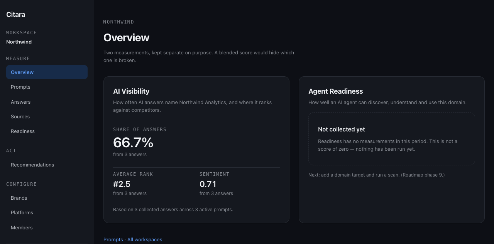
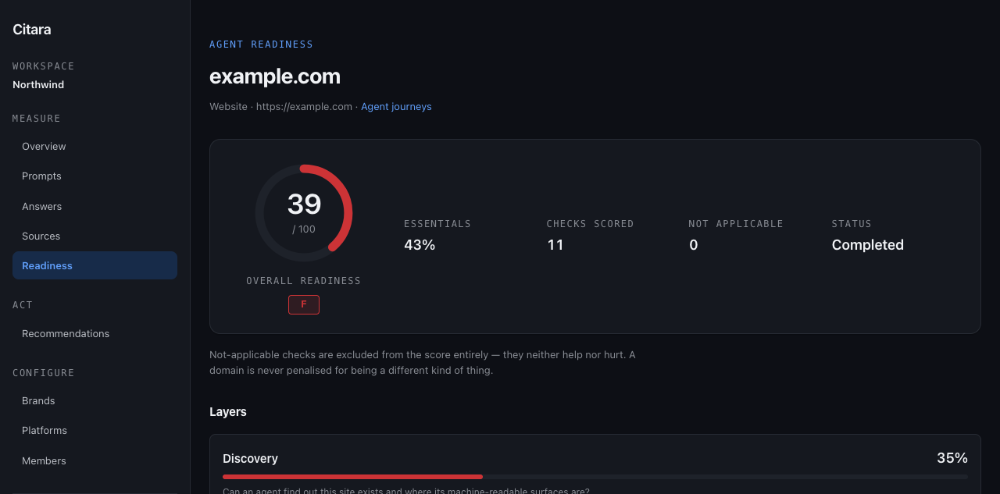
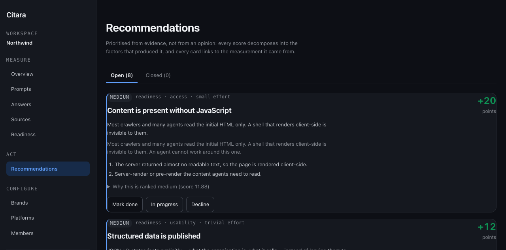
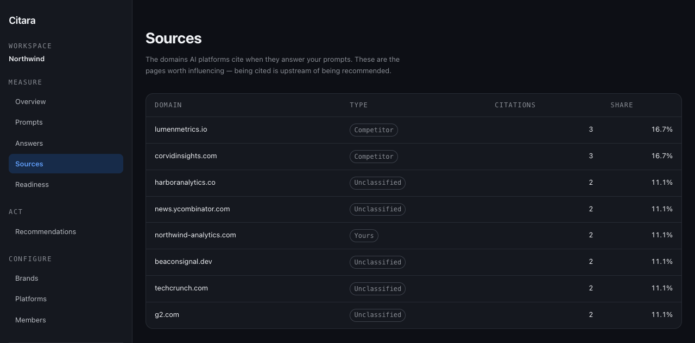
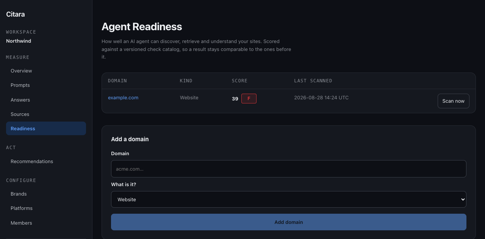

Work in progress · self-hosted
Most AI visibility tools show you a number. Citara shows you where it came from.
A number you cannot trace is decoration. Citara records the answer text, the mention, the citation and the scan result that produced every figure — and when it has measured nothing, it says so instead of drawing a zero.
Nothing was collected, so the metric defaults to zero. The customer reads a failure that was never measured.
Readiness has no measurements in this period. This is not a score of zero — nothing has been run yet.
01 — Two measurements
Two questions, deliberately never blended into one.
A single “AI presence score” would average a demand-side signal with a technical one, and hide which of the two is broken. Citara keeps them apart and makes you look at both.
AI Visibility
How often AI assistants name your brand when someone asks a question in your market, where you rank against competitors, and which domains get cited in the answer.
- share of answers
- average rank position
- sentiment, sentence-scoped
- cited source domains
- competitor co-occurrence
Agent Readiness
How well an AI agent can discover, retrieve and understand your site — scored against a versioned check catalog, so a result stays comparable to the ones before it.
- discovery & access
- content legibility without JS
- structured data
- usability for an agent
- read-only agent journeys
A check that does not apply to a target is removed from the score and its weight redistributed — never counted as a failure. A domain is not penalised for being a different kind of thing.
02 — The six data states
Six different things that all look like “no number”.
Every metric in the system carries one of these, end to end — through the database, the API and the page. They are never collapsed into each other, because each one calls for a different response from the person reading it.
A real measurement exists, with the evidence that produced it.
Measured, and the answer is genuinely none. Nobody mentioned you.
Nothing has been collected for this period. Not a zero.
The check does not apply here. Excluded from the score, not failed.
The attempt errored. The gap is in the collection, not the subject.
Some of the run landed. The figure is real but incomplete, and says so.
03 — How a number is made
Every figure decomposes back to raw text.
Snapshots are recomputed from evidence, never incremented in place — so a re-run corrects history instead of compounding an error into it.
-
Raw answer
The provider’s response is stored verbatim with its model, prompt and run metadata, and treated as untrusted text everywhere it is displayed.
-
Mentions & citations
Brand mentions are extracted with token boundaries and alias folding; cited URLs are resolved to domains and classified per workspace.
-
Analysis result
Rank position and sentence-scoped sentiment attach to the specific mention they were derived from, not to the answer as a whole.
-
Daily snapshot
Aggregates are weighted by the answers behind them and carry their own data state, so a thin day never masquerades as a confident one.
04 — The product
Screens from a running instance.
Captured from a local install against a seeded demo workspace. The figures are computed from that workspace’s collected answers — small numbers, but real ones.





05 — Build status
Not a launched product. Here is exactly how far it goes.
The blueprint defines 23 phases. Applying the same rule to itself, this page reports the real count rather than a rounded impression of progress.
Later phases — content execution, workflows, MCP and CLI tooling, alerting, billing and integrations — are specified but not built. The full roadmap lists every task and its state.
06 — How it is built
A modular monolith, tested where it matters.
- Application Next.js App Router, React, TypeScript in strict mode
- Data PostgreSQL with Drizzle; every tenant row carries a workspace id
- Jobs BullMQ on Redis; each job carries an idempotency key and a correlation id
- Isolation One access chokepoint; a non-member gets 404, never 403
- Fetching All user-supplied URLs go through an SSRF guard that pins the resolved address
- Tests Unit, integration and end-to-end, plus a repo-wide consistency gate in CI
The consistency gate enforces nine rules across the whole repository — tenant scoping, route wrappers, untrusted content handling, SSRF containment, data-state semantics, module boundaries and migration drift among them. Breaking one fails the build.